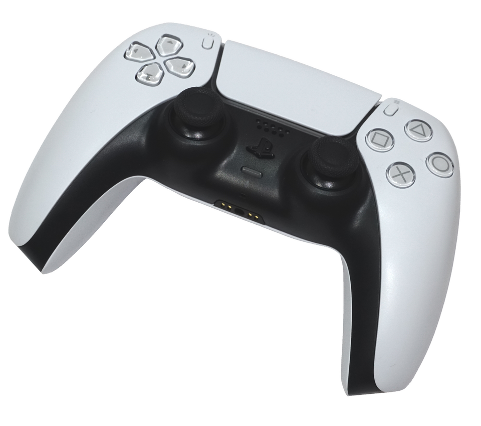

Live input
The buttons illuminate as the controller reports each press.

L2 L1 R1 R2Adaptive triggers
Shape ten hardware zones for each trigger. Manual tests stop after 15 seconds; a matched game profile can renew its lease.
The haptic bench
Shape a texture, then send it to the controller's USB voice coils. Bluetooth and pads without a four-channel audio endpoint use motor rumble.
Hear it in your hands
Capture what Windows is playing and turn low frequencies and sharp transients into left and right grip motion. Your main speakers continue playing normally. Keep system audio on your speakers or headphones to avoid a feedback loop.
Bridge off
Touch and motion
Turn the touchpad into a pointer, send arrow keys with inward edge swipes, or aim with motion.
Lightbar
Choose a fixed color, follow the battery level, or release the lightbar to other software.
Color
Race signals
Set Forza's Data Out format to Dash. Motorsport 2023 can send to 127.0.0.1; for Horizon 4/5 or a console, enable LAN listening and use this PC's IPv4 address in the game. Engine revs color the lightbar; gear changes make a short grip cue. The brake slip reading is an estimate from wheel slip, not a direct ABS signal.
Off
Profiles
Save curves, gyro and button bindings locally. Match a game executable to apply a profile while it is focused.
Button → virtual key. Not a virtual Xbox pad.
Diagnostics
Inspect buttons, report quality and competing controller tools while you test.
Jack: —
Leave the sticks alone. The five-second sample estimates how far each one rests from center.
No measurement yet.
Rotate each stick along its rim for ten seconds to see which directions reach the outer edge.
No measurement yet.